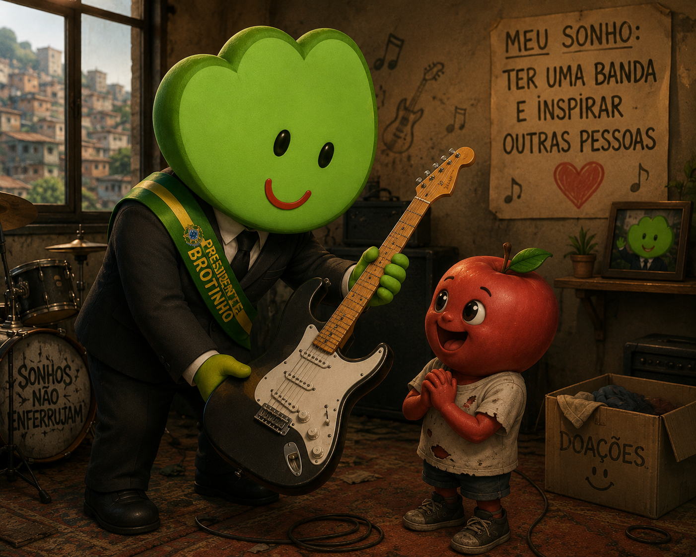
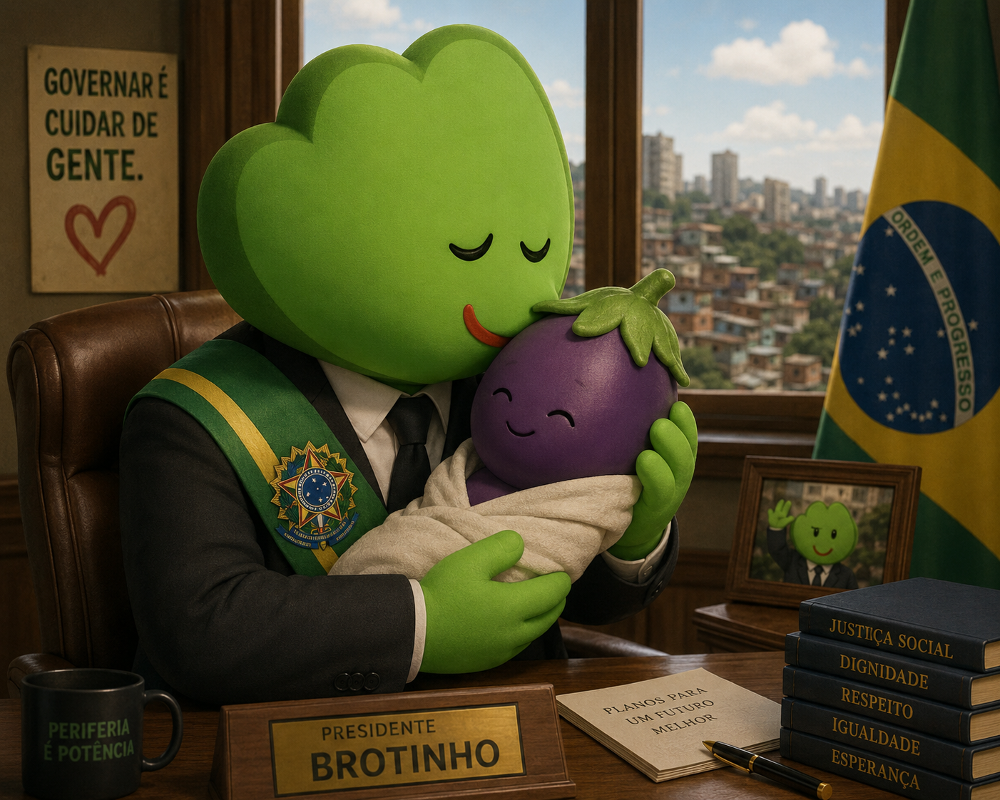
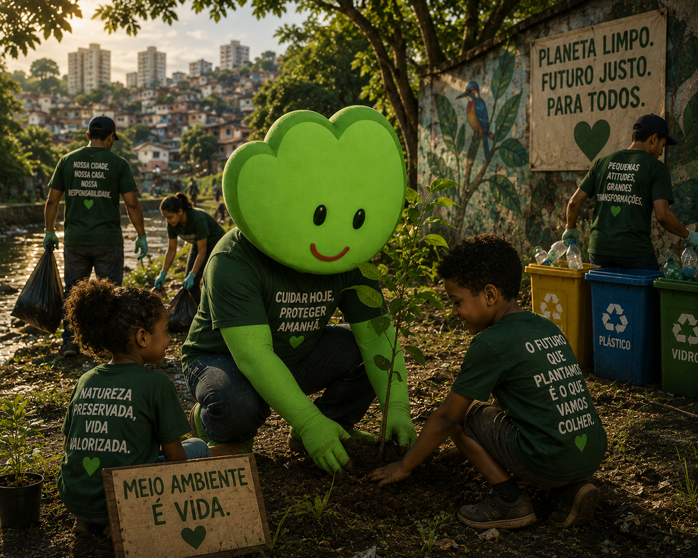
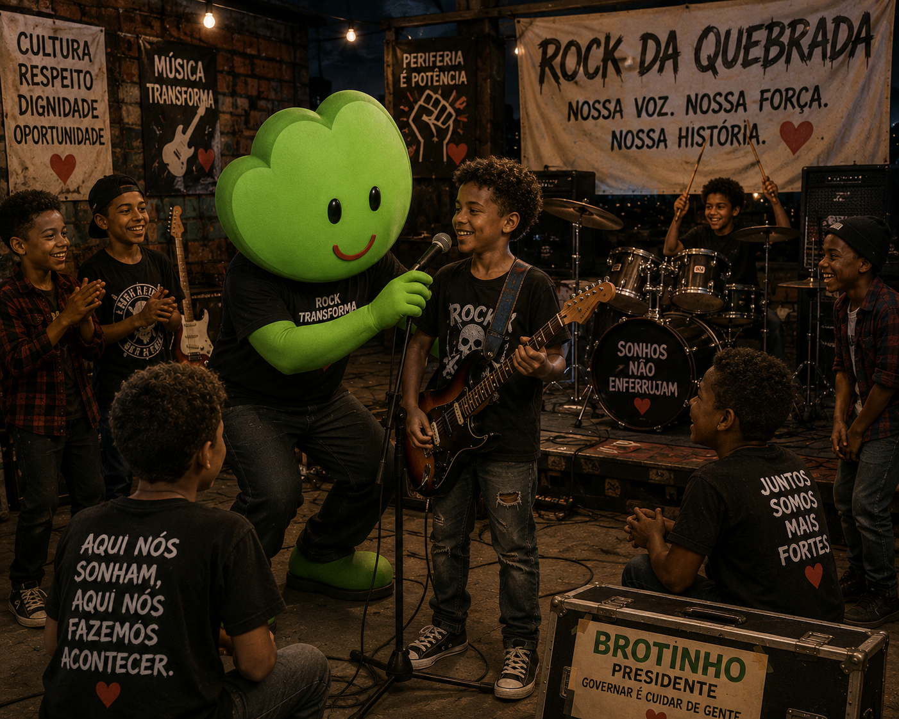
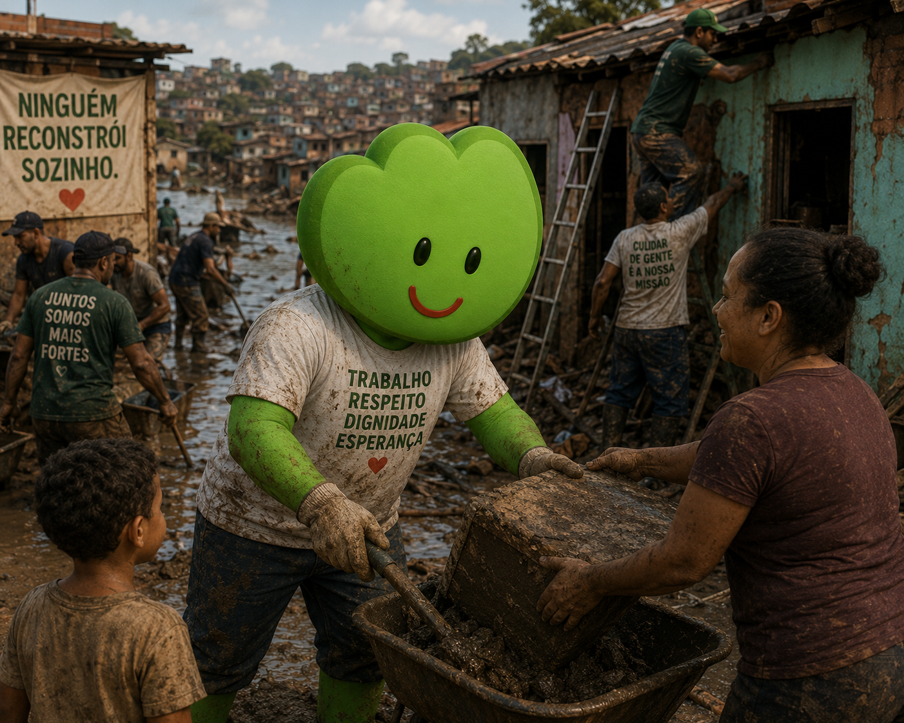

Plano de governo em foco
Conheça ideias e compromissos que fazem parte da plataforma de governo, apresentados de forma direta e clara.
Economia
Gerar emprego significa devolver dignidade às pessoas. O plano prevê incentivo ao pequeno empreendedor, redução da burocracia para abertura de negócios, investimentos em obras públicas que criem vagas de trabalho e programas de qualificação profissional. A economia deve crescer beneficiando também quem vive nas periferias e não apenas os grandes centros econômicos.

Social
Planos para ampliar acesso à educação, saúde e assistência social nas regiões mais vulneráveis. A educação é a principal ferramenta para transformar o futuro. O governo buscará ampliar o acesso à educação em tempo integral, fortalecer o ensino técnico e profissionalizante, modernizar escolas públicas e garantir internet de qualidade para estudantes e professores. O objetivo é reduzir a evasão escolar e preparar jovens para o mercado de trabalho e para a vida.

Meio ambiente
Medidas para conservar recursos naturais e incentivar energia limpa sem reduzir investimentos sociais. Desenvolvimento e preservação devem caminhar juntos. As propostas incluem ampliar áreas verdes nas cidades, incentivar a coleta seletiva e a reciclagem, investir na recuperação de rios e promover educação ambiental nas escolas. Além de proteger a natureza, essas medidas ajudam a melhorar a qualidade de vida e reduzir os impactos das mudanças climáticas.

Juventude
Os jovens precisam de oportunidades para construir seu futuro. O plano prevê programas de primeiro emprego, bolsas para cursos profissionalizantes, incentivo ao empreendedorismo, acesso à tecnologia e espaços de inovação. O objetivo é fazer com que talento e dedicação sejam mais importantes do que o bairro onde alguém nasceu.

Combate às Enchentes
Quem perde tudo em uma enchente não pode depender apenas da solidariedade dos vizinhos. O plano prevê investimentos em drenagem urbana, limpeza permanente de rios e córregos, obras de contenção, monitoramento de áreas de risco e planos rápidos de resposta a desastres. A intenção é prevenir tragédias e proteger as famílias antes que elas aconteçam.
